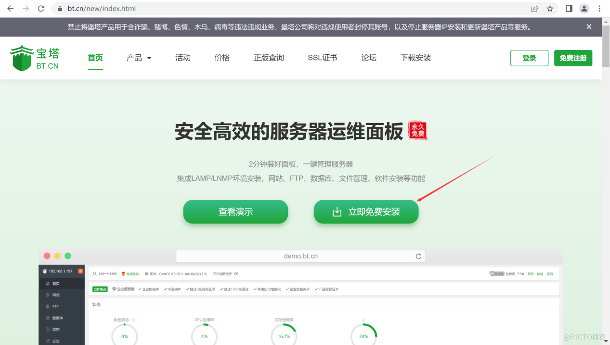
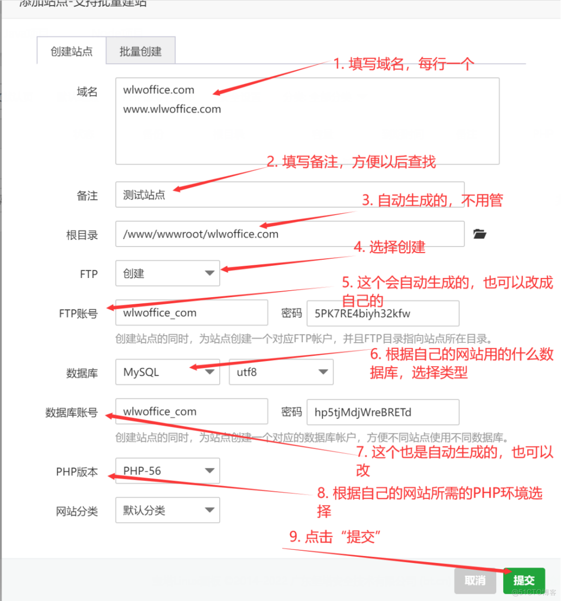
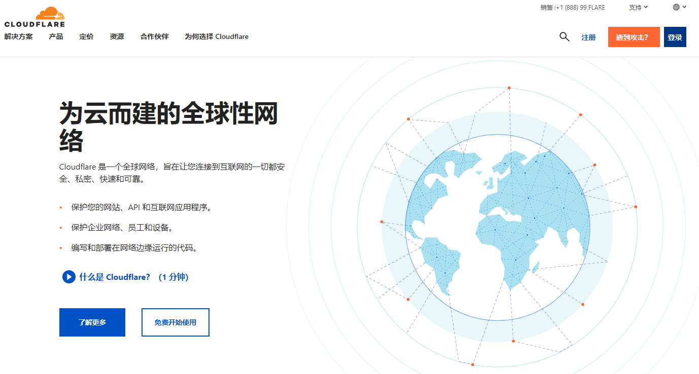
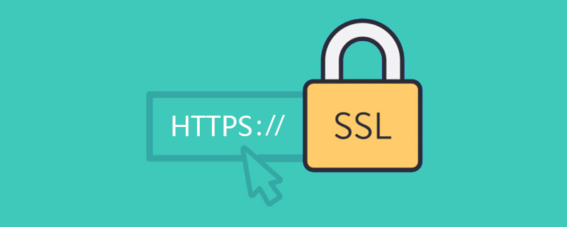
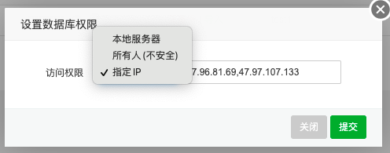

将静态资源托管在香港VPS上，如在香港vps上存储大量的图片，可以更快地响应用户的访问请求，减少页面加载时间，提高用户体验。
使用香港VPS服务器托管静态资源，可以避免因共享服务器资源导致的页面崩溃、访问缓慢等问题，提高访问稳定性。相较于云存储、CDN等服务，使用VPS服务器进行静态资源托管可以节约成本，尤其是对于小型网站、应用而言更为实惠。
采取IP访问限制、防盗链、HTTPS协议等多种方式进行安全加固，保护数据安全。将静态资源和主站放置在同一台服务器上，可以更方便地进行管理和部署，大大降低了运维成本。
在香港VPS托管静态资源的好处
提升网站加载速度由于VPS托管静态资源可以实现CDN加速，从而加速网站的加载速度，提高用户体验。
提升视频稳定：由于VPS托管静态资源采用分布式架构，多个节点之间并行处理数据，从而减少了单点故障的风险，同时也提高了系统的稳定性和可靠性。
节省成本：采用VPS托管静态资源，可以避免自己购买CDN服务和设备的成本，并且无需担心设备运行和维护的问题。
提升视频安全性：VPS托管静态资源可以采用多种安全防护措施，如设置防盗链访问控制、防火墙等，确保数据的安全性。
在香港VPS托管静态资源方法
一、购买香港VPS
首先需要购买一台香港VPS，建议选择配置较高的VPS以提高托管静态资源的效率和稳定性。
LightNodeLightNode是成立于2002年的香服务商，最低月付 $7.71，按时计费，流量单项计费。充 $10就可以开无限台实例，支持自定义镜像。首冲随机赠送 $5~20。
| CPU |
内存 |
硬盘 |
带宽/流量 |
价格 |
购买 |
| 1核 |
2G |
50G |
100Mbps/1TB |
$7.71/月 |
详情 |
| 2核 |
4G |
50G |
100Mbps/2TB |
$14.70/月 |
详情 |
| 4核 |
8G |
50G |
100Mbps/2TB |
$30.90/月 |
详情 |
| 8核 |
16G |
50G |
100Mbps/2TB |
$57.69/月 |
详情 |
| 8核 |
32G |
50G |
100Mbps/2TB |
$81.69/月 |
详情 |
| 16核 |
32G |
50G |
100Mbps/2TB |
$105.69/月 |
详情 |
DIYVM是一家基于美国硅谷机房的VPS主机商，成立于2012年，提供多种不同尺寸和配置的VPS计划。该公司的服务特点包括良好的网络速度、完善的技术支持、自定义服务等。
| 架构 |
CPU |
内存 |
硬盘 |
带宽 |
IPv4 |
价格 |
购买 |
| KVM架构 |
2 |
2GB |
50GB |
5Mbps |
1个 |
50元/月 |
详情 |
| KVM架构 |
4 |
4GB |
60GB |
5Mbps |
1个 |
100元/月 |
详情 |
| KVM架构 |
4 |
8GB |
70GB |
10Mbps |
4个 |
200元/月 |
详情 |
| KVM架构 |
8 |
16GB |
80GB |
10Mbps |
6个 |
400元/月 |
详情 |
| KVM架构 |
8 |
32GB |
100GB |
15Mbps |
6个 |
800元/月 |
详情 |
| KVM架构 |
16 |
64GB |
500GB |
15Mbps |
6个 |
1600元/月 |
详情 |
RAKsmart是一个提供VPS主机、域名注册等服务的虚拟主机供应商。它成立于2012年，总部位于美国，现在已经拥有200多个节点，并且覆盖了全球60多个国家和地区。
| 产品名称 |
CPU |
内存 |
硬盘 |
宽带 |
折扣价 |
|
| HK V1024 |
1 |
1 |
25G |
共享100M/峰值5M |
$5.00 USD |
详情 |
| HK V1024+ |
2 |
1 |
30G |
共享100M/峰值5M |
$8.00 USD |
详情 |
| HK V1024 |
2 |
1.5 |
35G |
共享100M/峰值5M |
$10.00 USD |
详情 |
| HK V1024 |
2 |
2 |
40G |
共享100M/峰值5M |
$13.00 USD |
详情 |
| HK V1024 |
4 |
4 |
80G |
共享100M/峰值5M |
$25.00 USD |
详情 |
| HK V1024 |
4 |
6 |
100G |
共享100M/峰值5M |
$35.00 USD |
详情 |
| HK V1024 |
6 |
8 |
160G |
共享100M/峰值5M |
$40.00 USD |
详情 |
二、安装Web环境Nginx/Apache
安装Web服务器软件，如Nginx、Apache等，用于提供Web服务。(推荐使用宝塔)

三、配置静态资源
将需要托管的静态资源放置到Web服务器指定的目录下，如Nginx的根目录是"/usr/share/nginx/html"。

四、配置CDN加速
可以选择安装CDN加速服务，如CloudFlare、阿里云CDN等，将静态资源在CDN节点上缓存，从而加速资源的访问速度。

五、配置SSL证书
为了保障静态资源传输的安全性，需要配置SSL证书，如Let's Encrypt等。

六、设置访问权限
设置合适的访问权限，如限制IP或者设置访问密码，以保障数据的安全性。

以上是在香港VPS上托管静态资源的方法，需要根据实际情况进行具体配置和优化以提高资源的稳定性和访问速度。
香港VPS上托管静态资源适用于以下业务
静态网站：如果您的网站主要是展示信息，如博客、简历等，那么使用香港VPS托管静态资源是非常适合的，可以提高网站的访问速度和稳定性。
图片、视频等媒体资源：如果您需要大量存储和传输图片、视频等媒体资源，使用香港VPS托管静态资源可以提高资源访问速度，并且可以更好地控制资源的访问权限。
CDN加速：如果您需要使用CDN加速服务来提高全球范围内用户的访问速度，那么使用香港VPS托管静态资源可以方便地进行CDN的配置和管理。
总的来说，在需要存储和传输静态资源的业务中，使用香港VPS托管静态资源可以提高访问速度和稳定性，同时可以更好地控制资源的访问权限，适用于大部分的Web应用。
设置blob视频链接加载
Blob（Binary Large Object）是一种二进制数据类型，可以用于存储各种类型的数据，如视频、音频、图片等等。在Web应用中，我们可以将二进制数据以Blob的形式加载到前端页面中，从而实现视频链接的加载和播放。 以下是加载视频链接的示例代码：
// 获取视频链接
let videoUrl = 'https://example.com/video.mp4';
// 发送请求获取二进制数据
fetch(videoUrl)
.then(response => response.blob())
.then(blob => {
// 创建video标签
let video = document.getElementById('my-video');
// 将Blob URL赋值给video标签
video.src = URL.createObjectURL(blob);
// 释放资源
video.addEventListener('ended', () => {
URL.revokeObjectURL(video.src);
});
});
<video id="my-video" width="640" height="360" controls></video>
上述示例中，我们首先在HTML中创建一个video标签，使用JavaScript获取视频链接并将其转化为Blob对象，然后使用URL.createObjectURL方法将Blob对象转化为Blob URL，最后将Blob URL赋值给video标签的src属性，从而实现了视频链接的加载和播放。
需要注意的是，在使用完Blob URL后需要手动调用URL.revokeObjectURL()方法来释放资源，避免内存泄漏。在本例中，我们通过添加video的ended事件监听器，在视频播放结束后自动释放资源。
在香港VPS上托管静态资源是最好的选择吗？
托管静态资源可以选择多种方式，香港VPS上托管静态资源也是一种选择，并且具有一些优点，但也需要考虑具体情况。
首先，香港VPS相对于其他地区的VPS，可能具有更优秀的网络性能，特别是在亚太地区的访问情况下，因为香港是一个国际化城市，拥有非常发达的互联网基础设施和网络传输能力。因此，选择香港VPS托管静态资源可以提高网站的访问速度和稳定性。 另外，托管静态资源可以减轻Web服务器的负担和流量压力，从而提高整个网站的性能。使用VPS托管静态资源可以更好地控制资源的使用，提高网站的安全性和稳定性。
但是，如果静态资源需要访问全球各地的用户，那么选择香港VPS可能不是最佳选择。因为香港VPS主要面向亚太地区，对于其他地区的用户可能存在访问延迟和带宽限制。在这种情况下，可以选择使用全球CDN等其他方式进行托管，以提高全球用户的访问速度和稳定性。
总结
总之，选择托管静态资源的方式需要根据具体情况进行选择。如果以亚太地区的用户为主要访问对象，并且资源文件相对较小，可以考虑选择香港VPS进行托管。如果需要访问全球用户或者资源文件较大，可以考虑使用CDN等其他方式进行托管。